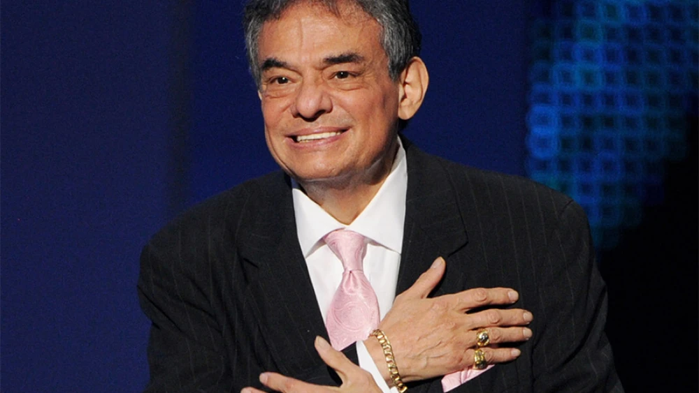

BIBLIOGRAFÍA
¿Quién es José José, el Príncipe de la Canción?
José Rómulo Sosa Ortiz, mejor conocido por su nombre artístico, José José, nació el 17 de febrero de 1948 en Azcapotzalco, Ciudad de México. Sus padres fueron Margarita Ortíz y José Sosa Esquivel, quienes también estuvieron involucrados en la industria musical; ella era concertista de piano, y él tenor de Ópera Nacional de México. José José destacó por ser un reconocido cantante, autor, actor y productor musical de renombre internacional.
¿Cómo y cuándo comenzó su carrera artística?
Desde que era un adolescente, José José se involucró en el mundo musical; el cantautor comenzó tocando la guitarra y cantando serenatas, lo que le abrió las puertas para que más tarde se uniera a ‘Los Peg’, un trío mexicano de bossa nova y jazz que formó junto con Enrique Herrera y Gilberto Sánchez, en donde destacó por tocar el bajo y contrabajo. El talento de José José dio mucho de qué hablar cuando en los 60, “El Príncipe de la Canción” fue invitado a una fiesta privada, y la hermana de su amigo resultó ser la secretaria ejecutiva del director de Orfeón Records. El cantante logró firmar su primer contrato con RCA Víctor y grabó su primer álbum en esa casa discográfica bajo el nombre de José José, en honor a su padre. Los primeros sencillos que lanzó fueron ‘Solo una mujer’, ‘Pero te extraño’ y ‘Sin ella’, pero fue con ‘La nave del olvido’ cuando comenzó a ganar fanáticos y seguidores.